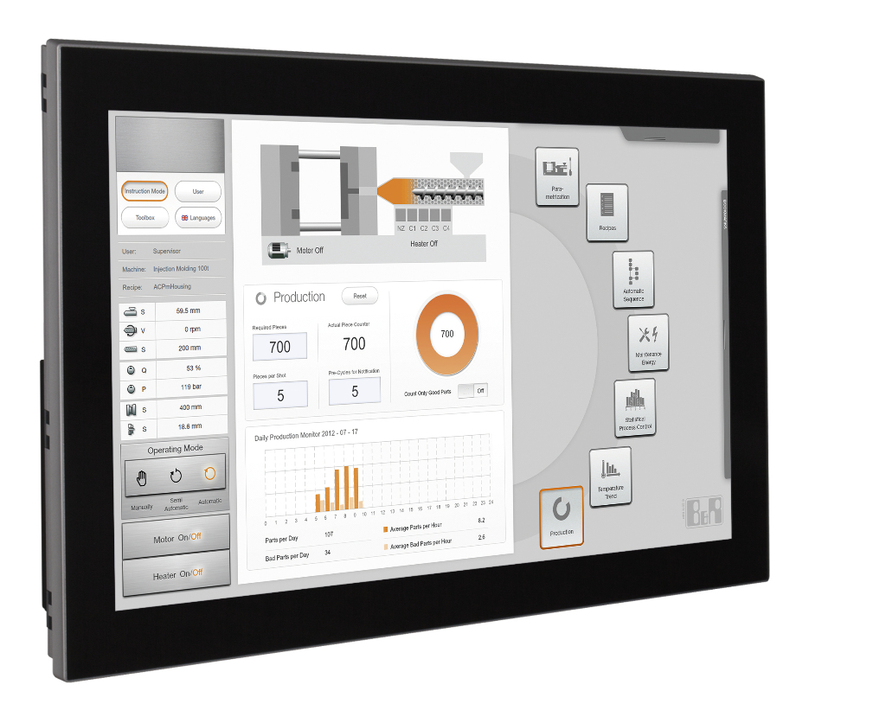

The human–machine interface (HMI)
In industry, the interface between a person and a machine is usually called an HMI. It is typically local to one machine or piece of equipment, and it is also known as an operator interface terminal (OIT) or operator interface console (OIC)[1]. In practice it is a panel with a screen and sometimes physical buttons, used to monitor and control a process.

Touchscreens have become the preferred interface for most machine builders, mainly because they are flexible and easy to use. Common technologies are resistive, capacitive and projected capacitive[2].
Built for harsh environments
A factory is not an office. Rugged computers are engineered to keep working under shock and vibration, temperature extremes, humidity, dust and other challenges[3]. For the interface this means sealed housings, tough screens and controls that work when the user is wearing gloves.
Touch technology matters here. According to Cybernet, a manufacturer of industrial computers, a resistive touchscreen can be used with gloves, while a capacitive one is more accurate and supports multi-touch[4]. Because this comes from a vendor, it should be read as a design guideline and not as a neutral rule.
The same device can be perfect in one place and unusable in another. A consumer touchscreen that works well in an office may fail on a vibrating machine with gloved hands.